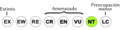

Archivo:Status iucn3.1 NT es.svg
De WikiEVA

Tamaño de esta previsualización: 200 × 50 píxeles. Otra resolución: 320 × 80 píxeles.
{kind=link}
{kind=link}
Archivo original (archivo SVG, nominalmente 200 × 50 píxeles, tamaño de archivo: 27 KB)
Historial del archivo
Haz clic sobre una fecha/hora para ver el archivo a esa fecha.
| Fecha y hora | Miniatura | Dimensiones | Usuario | Comentario | |
|---|---|---|---|---|---|
| actual | 01:08 19 oct 2012 |  | 200 × 50 (27 KB) | Marco Gaiani (Discusión | contribuciones) |
- No puedes sobrescribir este archivo.
Usos del archivo
Hay más de 100 páginas que enlazan con este archivo. La lista siguiente sólo muestra las primeras 100 páginas que enlazan con este archivo. También puedes consultar la lista completa.
- Accipiter collaris
- Allobates rufulus
- Amazona autumnalis
- Amazona dufresniana
- Amazona festiva
- Amazona mercenarius
- Ampelioides tschudii
- Andaeschna timotocuica
- Andigena nigrirostris
- Anisognathus igniventris
- Anomaloglossus guanayensis
- Anomaloglossus praderioi
- Anomaloglossus roraima
- Anoura latidens
- Ara ararauna
- Ara macao
- Aromobates alboguttatus
- Bolitoglossa borburata
- Cabassous centralis
- Cacajao melanocephalus
- Caluromys lanatus
- Campylopterus ensipennis
- Celsiella revocata
- Celsiella vozmedianoi
- Centrolene altitudinale
- Cercibis oxycerca
- Chelonoidis carbonaria
- Chelonoidis denticulata
- Chlorostilbon russatus
- Choloepus hoffmanni
- Ciconia maguari
- Cochranella duidaeana
- Cochranella riveroi
- Coeligena bonapartei
- Corapipo leucorrhoa
- Cranioleuca hellmayri
- Crax daubentoni
- Creagrutus lepidus
- Crypturellus ptaritepui
- Dendrocolaptes sanctithomae
- Dendroica cerulea
- Diclidurus isabellus
- Dischidodactylus colonnelloi
- Dischidodactylus duidensis
- Eudocimus ruber
- Gracilinanus dryas
- Hemispingus melanotis
- Hemispingus verticalis
- Hyalinobatrachium fragile
- Hylophilus semibrunneus
- Hyloscirtus jahni
- Ichthyomys hydrobates
- Lonchophylla robusta
- Mannophryne herminae
- Marmosa xerophila
- Metaphryniscus sosae
- Micrastur buckleyi
- Monodelphis adusta
- Myersiohyla inparquesi
- Myioborus albifrons
- Myotis nesopolus
- Myrmeciza laemosticta
- Myrmotherula multostriata
- Neochen jubata
- Ochthoeca nigrita
- Odontophorus columbianus
- Oreophrynella cryptica
- Oryzoborus maximiliani
- Phoenicircus carnifex
- Phoenicopterus ruber
- Phyllomyias cinereiceps
- Pithecia pithecia
- Polystictus pectoralis
- Pristimantis anolirex
- Pristimantis anotis
- Pristimantis boconoensis
- Pristimantis reticulatus
- Proechimys poliopus
- Puma concolor
- Ramphastos citreolaemus
- Ramphastos sulfuratus
- Ramphomicron microrhynchum
- Rhinella sternosignata
- Rhogeessa minutilla
- Rupicola peruvianus
- Scytalopus atratus
- Sigmodontomys alfari
- Sporophila schistacea
- Stefania ginesi
- Stefania goini
- Stefania oculosa
- Stefania scalae
- Stefania schuberti
- Sturnira bidens
- Tepuihyla aecii
- Tepuihyla luteolabris
- Thamnistes anabatinus
- Thripadectes holostictus
- Thyroptera discifera
- Vampyrum spectrum
{kind=link}
{kind=link}
{kind=link}
{kind=link}
{kind=link}
{kind=link}
{kind=link}